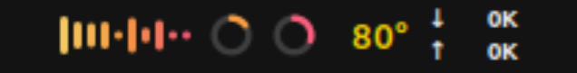
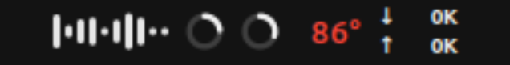

What you get
A calm top bar that still tells you what your computer is doing.
Two rings
One fills up with processor use, the other with memory use. No numbers to read; a glance is enough.
Temperature
The processor's temperature, turning amber above 75 °C and red above 85 °C. Celsius or Fahrenheit.
Music visuals
Ten small bars that move with the sound while a media player is playing, and fade away when it stops.
Now playing
Rest the pointer on the bars to see what is playing and in which app. The menu shows it too, and a click takes you there.
Light strip
Or show the music as a row of pixels along the whole top bar, in the palette's colours. Or both.
Network speed
Download over upload in two small lines of fixed width, so the top bar never shuffles sideways as the numbers change.
One menu
Click for processor speed and load, memory and swap, graphics, disk and fan readings, and the four busiest apps.
Four palettes
Ember, Aurora, Orchid, or Mono, which simply uses the top bar's own text colour.
A switch for everything
Each part turns on or off on its own, and a part that is off costs nothing. New parts start off.
Light by design
Tempo was built for a laptop that runs hot, so the rule is simple: do nothing unless something on screen needs to change. Measured on a 2019 Ryzen 5 3500U laptop with GNOME Shell 42; figures are percent of one of its eight processor threads.
State, in a clean test (make bench) | Added cost |
|---|---|
| Rings, temperature and network shown | Nothing measurable |
| Small bars at 8 updates a second (the default) | 2.1 % |
| Small bars at 12 updates a second | 3.0 % |
| Small bars at 20 updates a second | 5.4 % |
| Light strip at 12 updates a second | 3.5 % |
| Bars and light strip at 12 updates a second | 4.6 % |
On a busy real desktop expect about three times these figures: the same laptop in daily use, with two screens and a video playing, measured about 9 % for the small bars at 12 updates a second.
- Nothing is polled for music. Tempo waits for the session bus to say that a player started. The recorder stops a few seconds after it pauses, so the sound card can go back to sleep.
- Redraw only on change. A ring is repainted only when its percentage changes; a label only when its text changes.
- Slow sensors never block your desktop. Hardware sensors are read on a worker thread, and the process list in small slices between frames.
- Menu details are read only while the menu is open, and players are asked what they are playing only while the pointer rests on the bars.
- Nothing is listened to that you can't see. While a fullscreen window hides the top bar, the recorder is stopped.
- The one real cost is animation. Moving with music means GNOME Shell repaints a piece of the top bar for every update. That is why the update rate is a setting with a modest default, why music is off until you switch it on, and why the light strip, which repaints a strip as wide as the screen, costs the most.
Screenshots
These are screenshots, not drawings. The project's test tool takes them from a GNOME Shell running the current code, with generated music playing. The song and the app names in them are test data.





Ember, Aurora, Orchid and Mono, three times life size.

Rest the pointer on the bars to see what is playing, and in which app.

The light strip: each bar lights its own stretch of the top bar.

Works on
Any distribution that uses the GNOME desktop, on any processor architecture. Tempo is a GNOME Shell extension, so it does not run on KDE Plasma, Xfce, Cinnamon or COSMIC.
| GNOME Shell | You have it on | Status |
|---|---|---|
| 42 | Ubuntu 22.04 LTS, Pop!_OS 22.04 | Tested on a real desktop and by the automated test |
| 43 | Debian 12 | Same build as 42 |
| 44 | Fedora 38 | Same build as 42 |
| 45 | Fedora 39, Ubuntu 23.10 | Same build as 46 |
| 46 | Ubuntu 24.04 LTS | Tested by the automated test |
| 47 | RHEL 10, AlmaLinux 10, Rocky Linux 10, Fedora 41 | Same build as 46 |
| 48 | Debian 13, Fedora 42, Ubuntu 25.04 | Tested by the automated test |
| 49 | Fedora 43, Ubuntu 25.10 | Same build as 48 |
| 50 | Ubuntu 26.04 LTS, Fedora 44 | Same build as 48 |
The automated test loads Tempo in that GNOME Shell and exercises every feature: all settings, the menu, all palettes, music bars with real captured sound, switching the extension off and on twice, and the settings window.
Install
Download the zip for your GNOME Shell version from the releases page, then:
gnome-extensions install --force tempo-*.shell-extension.zip
# log out and back in, then:
gnome-extensions enable tempo@saikatnjm.github.ioOr from source, without root access:
git clone https://github.com/saikatnjm/tempo.git
cd tempo
make installMusic visuals need parec (package pulseaudio-utils), which Ubuntu, Fedora, Debian and most GNOME desktops already have. It works with PulseAudio and PipeWire.
Your sound stays yours
- Speakers only. Tempo reads the sound going to your speakers. It never opens the microphone.
- Nothing is kept. The sound becomes ten bar heights in memory and is thrown away. Nothing is saved, and Tempo never uses the network.
- Only while music plays. The recorder runs only while a media player reports that it is playing.
- Open source. Every line is on GitHub under the GPL-3.0-or-later licence.
Questions
Which app is making that sound?
Rest the pointer on the small bars, or open the menu: the song and the app are at the top. Click it there to go to the app.
The bars don't show up
Check that "React to music" is on, that something is playing sound, and that the player supports the standard media controls. If it appears in GNOME's media controls in the notification list, it does.
The temperature isn't shown
Your machine has no sensor Tempo recognises yet. AMD, Intel and most ARM boards work; please open an issue for anything else.
Can it show numbers next to the rings?
The numbers are one click away in the menu. Keeping the top bar calm is the point.
Why is there a small Tempo icon in my top bar?
Every part is switched off. The icon keeps the menu reachable so you can switch things back on.